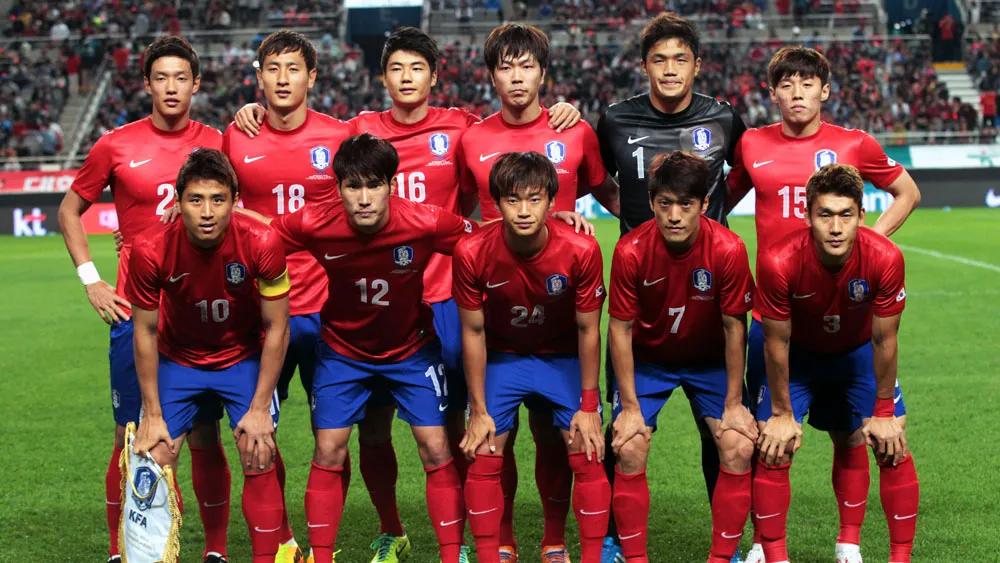

A seleção sul-coreana participou de nove edições da Copa do Mundo de futebol. Nas primeiras cinco participações a Coreia do Sul não passou da primeira fase. Co-sede da Copa do Mundo de 2002 com o Japão a Coreia do Sul chegou ao inédito 4º lugar.
2 Títulos na Copas da Ásia, 1 naCopa das Nações Afro-Asiáticas, 4 em Jogos Asiáticos e 1 titulo em Universiada.
| Data/Hora | Estádio | Adversário |
|---|---|---|
| 24 nov 2022 / 10h00 | Estádio da Cidade da Educação | Uruguai |
| 28 nov 2022 / 10h00 | Estádio da Cidade da Educação | Gana |
| 2 dez 2022 / 12h00 | Estádio da Cidade da Educação | Portugal |